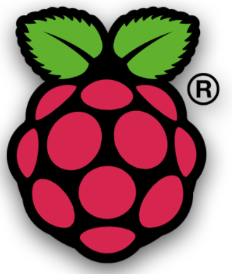
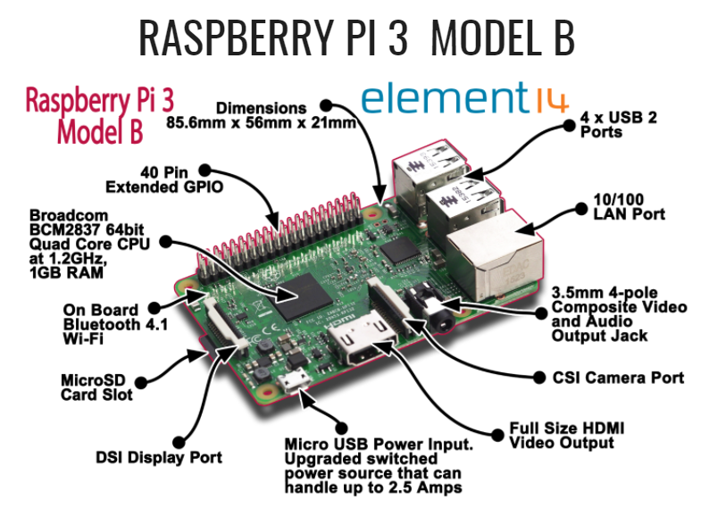
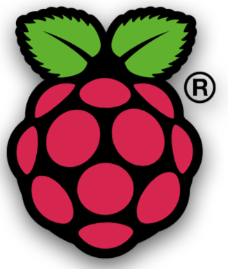
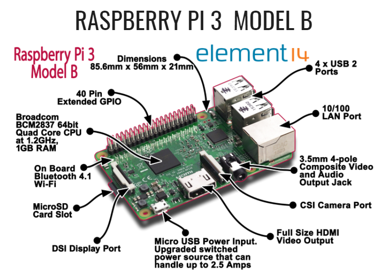

Raspberry Pi | Electronics
Raspberry Pi
Physical computing is combining software (code) and hardware (computers, Arduino, Raspberry Pi) to sense and respond to the analog world. Physical computing usually takes a hands on approach. You will spend much time coding, setting up circuits, installing sensors and analyzing the data provided by the sensors or motors. We will use the software Scratch and Python, the Raspberry Pi,various Hats,sensors and electronics to form the basis for our physical computing.
The Raspberry Pi was created as a way to teach coding and programming at an affordable price. The real power of the Raspberry Pi is 40 pin GPIO (General Purpose Input/Output). This allows for the Raspberry Pi to be used to drive motors, light up LEDs, sense motion and much more. You will find the Raspberry Pi to be extremely versitile in its use.
 



GPIO Reference
Physical Computing With Python
Parent or Roommate Detector (PIR Motion Sensor)
Pi Camera
SenseHat
Raspberry Pi Learning Resources Multiple Projects
Raspberry Pi
Assignment
1. Describe your experience using Raspberry Pi.
2. What did you learn about physical computing?
3. Describe why Scratch and Python are important when using Raspberry Pi.
4. What was your favorite Raspberry Pi project and why?
Back to index